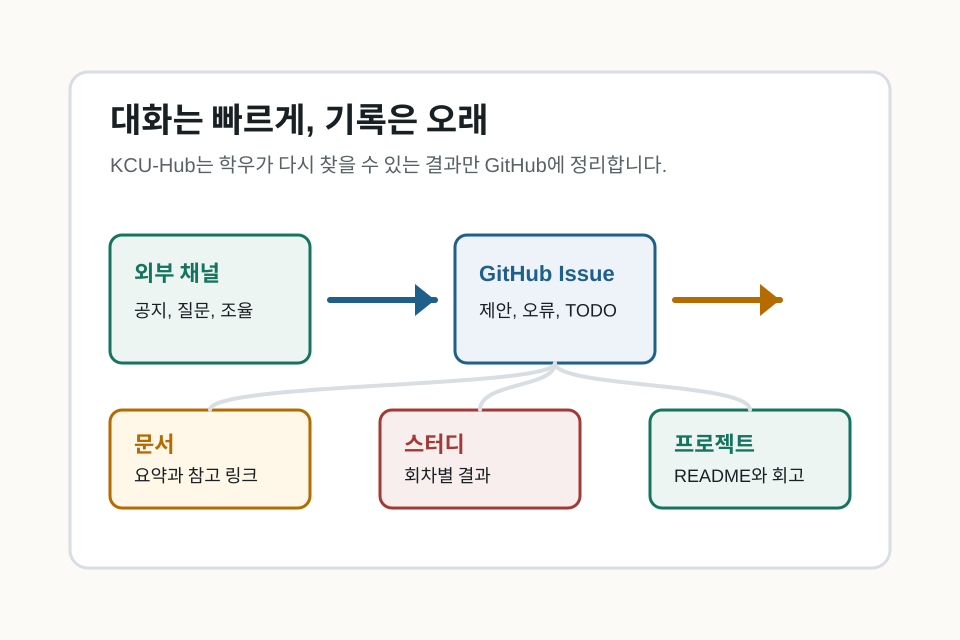

자료 찾기
관심 있는 과목, 스터디, 프로젝트 repo의 README부터 확인합니다.
비공식 학우 운영 허브
실시간 대화는 외부 채널에서 하고, 다시 찾아볼 자료와 프로젝트 기록은 GitHub에 남깁니다. 기본 언어는 한국어이며, GitHub가 익숙하지 않아도 읽기와 제보부터 시작하실 수 있습니다.

처음 오셨다면
관심 있는 과목, 스터디, 프로젝트 repo의 README부터 확인합니다.
깨진 링크, 오래된 설명, 오타는 Issue로 알려주시면 됩니다.
공개 가능한 요약, 참고 링크, 진행 회고를 Markdown으로 남깁니다.
기여 방법
무엇을 남기나요
공개 가능한 개념 요약, 참고 링크, 복습 순서를 정리합니다.
목표, 회차별 자료, 진행 결과, 다음 할 일을 남깁니다.
실행 방법, 현재 상태, 열린 과제, 회고를 이어받기 쉽게 정리합니다.
새 repo가 필요한 이유, 첫 산출물, 유지보수 계획을 Issue로 제안합니다.
공개 기준
오타 하나, 링크 하나, 짧은 회고 하나가 다음 학우에게는 길잡이가 됩니다.